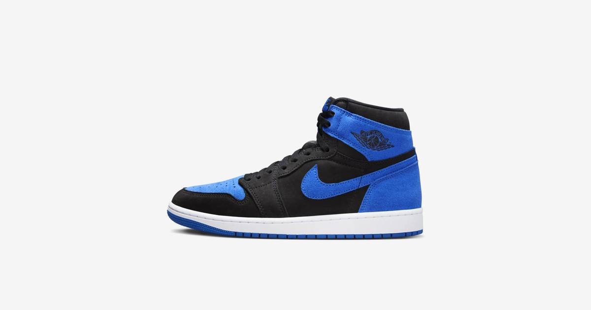

Air Jordan 1 'Royal' returns today at $185
The black-and-royal Air Jordan 1 is back in stores today at $185 — the first retro of the iconic colorway since 2017.

Disclosure: this post contains affiliate links. I earn a commission on qualifying purchases.
# Air Jordan 1 'Royal' returns today at $185
The Air Jordan 1 "Royal" is back in stores today at $185 — the first retro of the black-and-royal colorway since 2017. Nine years is a long wait for one of the most storied colorways in the entire Jordan 1 lineage.
Why this drop matters
• First retro since 2017: Nearly a decade between releases of an OG colorway.
• October must-have: Andscape ranks it among the month's must-have drops.
• The price anchor: Holding $185 in a cooled-off AJ1 market makes this flagship retro the anchor every price around it gets judged against. If the Royal can't move at $185, nothing in the line can.
Sources
• Sneaker News — Jordan 1 Royal store list
• Andscape — October sneaker drops
Watch
Source: THIS UPCOMING JORDAN IS PROOF THAT JORDAN 1'S ARE DEAD! AND THEY MAY NEVER COME BACK! by hegotkickz — an unboxing and full first look at the 2026 Jordan 1 Royal, covering quality, materials, and colorway execution, and asking whether the Royal can bring the AJ1 hype back.